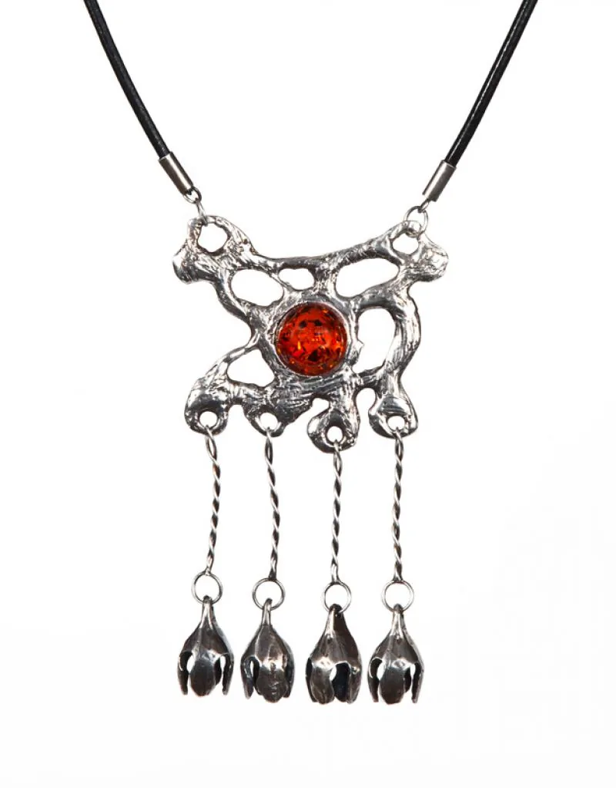
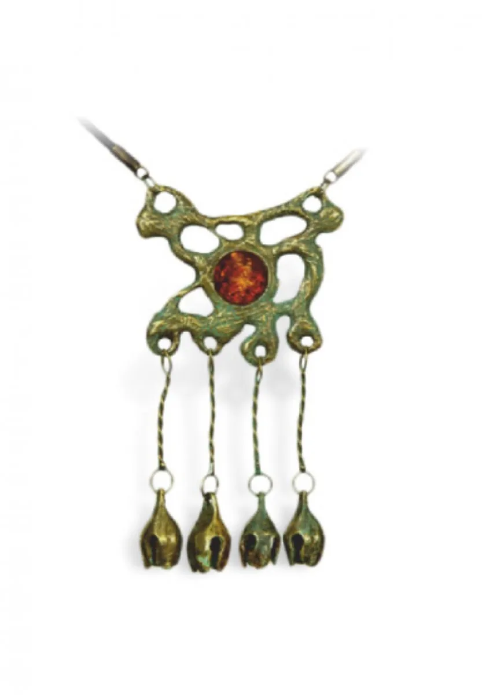
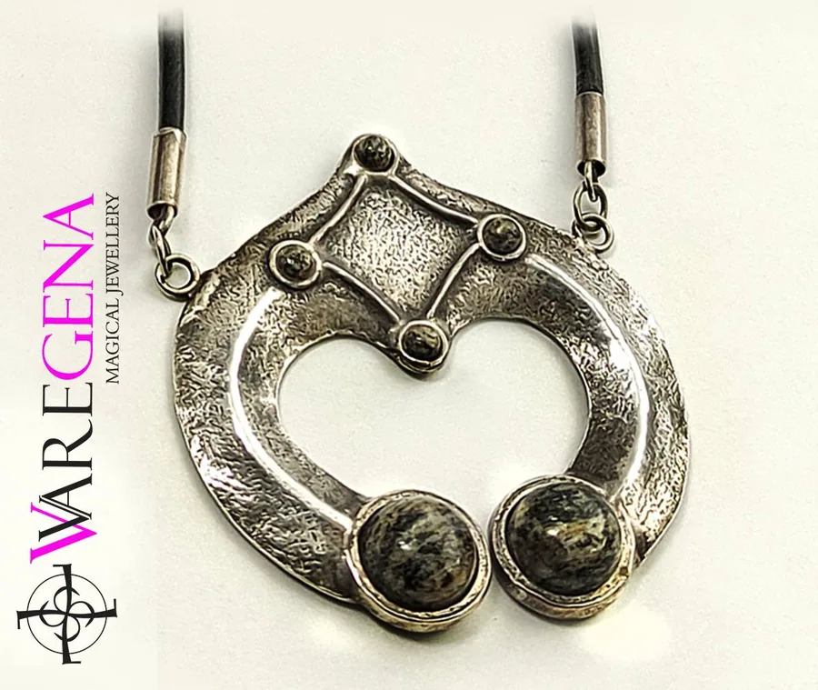
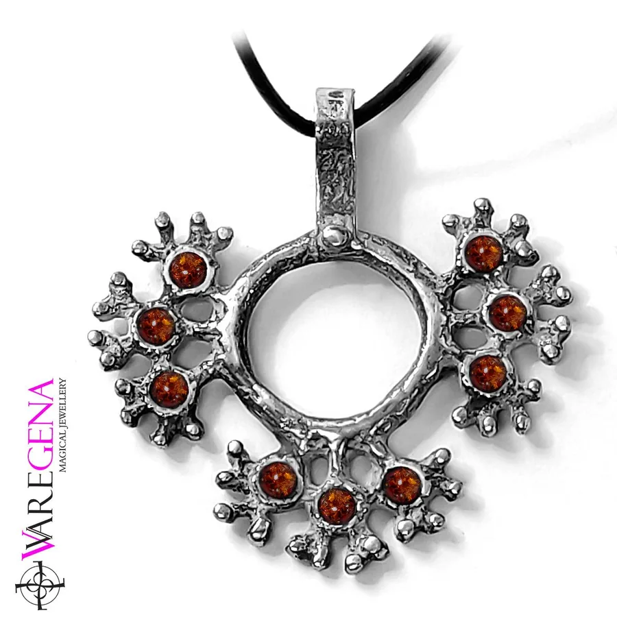
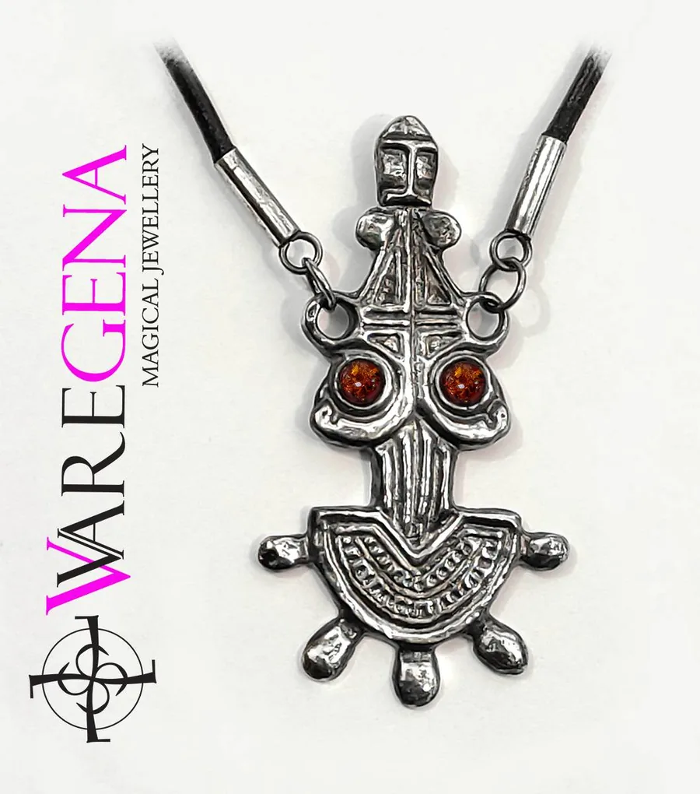

Wisior Czarodziejski Amulet Szamana
W13s · Kolekcja srebrzona
285 zł

Wzór Czarodziejski Amulet Szamana
Ten wzór podczas swoich narodzin otrzymał imię Czarodziejski Amulet Szamana. Dźwięk dzwonków wprowadza w mistyczny świat.
Symbolika wszystkich wzorówInformacje o produkcie
- mosiądz posrebrzany
- bursztyn 16 mm
- wymiar wisiora 105 × 60 mm
- rzemień czarny, skóra, dł. 65 cm
Biżuteria wykonywana ręcznie, każdy egzemplarz ma cechy indywidualne. Wysyłka w ozdobnym opakowaniu, 30 dni na zwrot. Realizacja i dostawa
Dobierz do kompletu

Wisior Miłosny Związek z granitem mazurskim
W21s · srebrzonaPrzyciąga, rozwija i wspiera związki partnerskie.
235 zł

